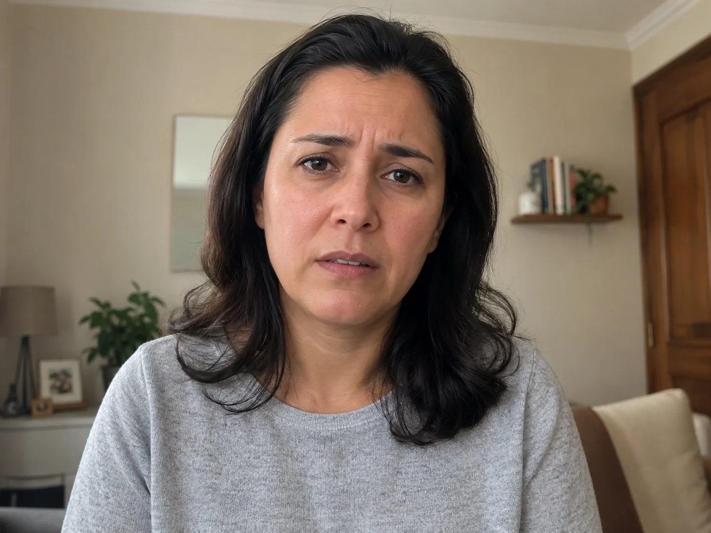
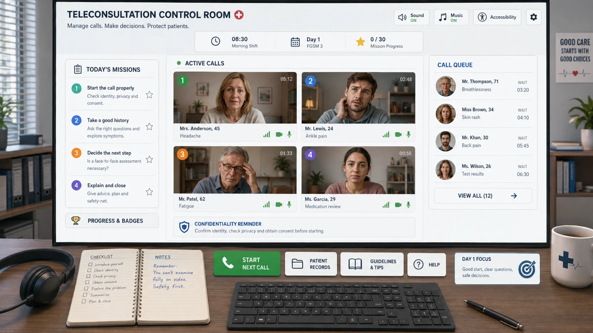
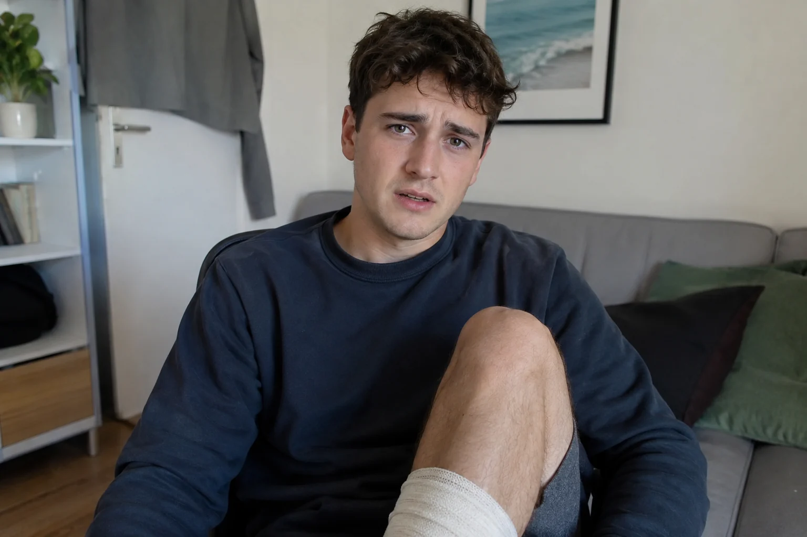
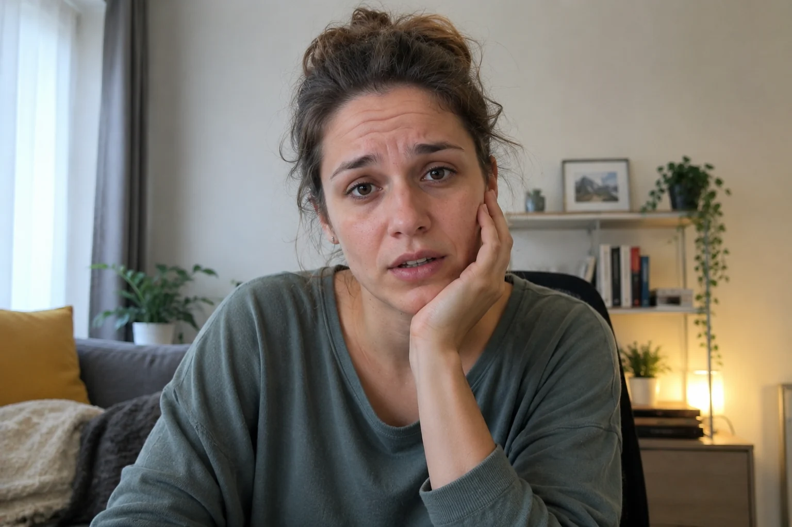

Patient 01Headache + dizzinessCalling now

FGSM3 · DAY 1 · INDIVIDUAL ACTIVITY
Your first shift starts here. Connect safely, communicate professionally and keep control of the consultation.
TODAY'S SHIFT
Mission 1 focuses on the first minutes of a safe video consultation. You will prepare your station, connect to Patient 01, confirm identity and location, protect privacy and confirm that the patient is happy to continue by video.



MISSION 1 · SAFE START
Press Start Mission 1 when you are ready.
Patient 01 is waiting. Prepare your station before connecting.
MISSION 2 · ASK THE RIGHT QUESTIONS
Complete Mission 1 to unlock the clinical history.
Start broad, then clarify onset, frequency, associated symptoms, severity, warning signs, previous episodes and the patient's concern.
Open the consultation safely first. Mission 2 will unlock automatically when Mission 1 is complete.
TRAINING BAY · -ED AUDIO LAB
Complete Mission 2 to unlock pronunciation training.
Listen if you want to, read the transcript, then classify the -ed ending. There is no timer and audio is never required to complete the lab.
Finish the clinical history with Patient 01 first. The pronunciation lab will unlock automatically.
LANGUAGE BAY · TIMELINE CHECK
Complete the -ed Audio Lab to unlock the timeline monitor.
Use the Past Simple for a finished event or specific past time. Use the Present Perfect when the past situation is connected to now.
Complete the pronunciation Training Bay first. Patient 01's history will then reopen for a grammar check.
MISSION 4 · PATIENT 02
Complete the Timeline Check to take the next call.
The patient twisted an ankle while exercising two days ago. It is swollen and painful, but they can still walk. Explore the injury, use video appropriately and decide what needs an in-person assessment.
Finish the Timeline Check with Patient 01 first. The next video call will unlock automatically.
MISSION 5 · CONTROL-ROOM DECISIONS
Complete Patient 02 to unlock the decision desk.
For each fictional case, choose the most appropriate next step for this training scenario. The aim is not to diagnose: it is to recognise the limits of remote assessment and communicate the plan clearly.
Finish Patient 02 first. The next control-room task will unlock automatically.
MISSION 6 · PATIENT 03
Complete the Online or Face-to-Face decision desk to take Patient 03's call.
The patient has felt unusually tired for several weeks, has lost weight without trying and sometimes feels dizzy. Explore symptoms, background, impact and concern, then explain why further assessment is needed.
Finish the decision desk first. The next video call will unlock automatically.
MISSION 7 · PATIENT 04
Complete Patient 03 to take Patient 04's call.
The patient started a new medicine a few days ago and has developed nausea and an upset stomach. Clarify the medication, dose and timing, screen for warning signs, address the patient's wish to stop it and agree a safe review plan.
Finish Patient 03 first. The medication review will unlock automatically.
TRAINING BAY · RESEARCH COMMS TERMINAL
Complete Patient 04 to unlock the research terminal.
Move through three consoles: Methods Log, Research Verb Bank and Results Dashboard. The comparison figures in this game are fictional practice data, not results from your own article.
Finish Patient 04 first. The scientific-presentation training will unlock automatically.
MISSION 8 · CLOSE SAFELY
Complete the Research Comms Terminal to unlock Close Safely.
The patient should leave knowing what you understood, what happens next and what to do if symptoms worsen. Finish with one final opportunity for questions.
Finish the Research Comms Terminal first.
FINAL · LIVE SHIFT
Complete Close Safely to unlock your final shift.
The Control Room will assign one of today's four fictional patients. Your final report scores five areas: opening, clinical questioning, communication, online safety and closing. No timer. Audio remains optional.
Finish Close Safely first. Your final patient will then be allocated automatically.
DAY 1 · GAME ROADMAP
Day 1 will mix clinical communication with the pronunciation and grammar work from class.
Accessible by design: audio is optional, every patient reply has a transcript, the mission works with keyboard or touch, and there is no time limit. Use the Accessibility button for text size, spacing, contrast, reduced motion and reading support.